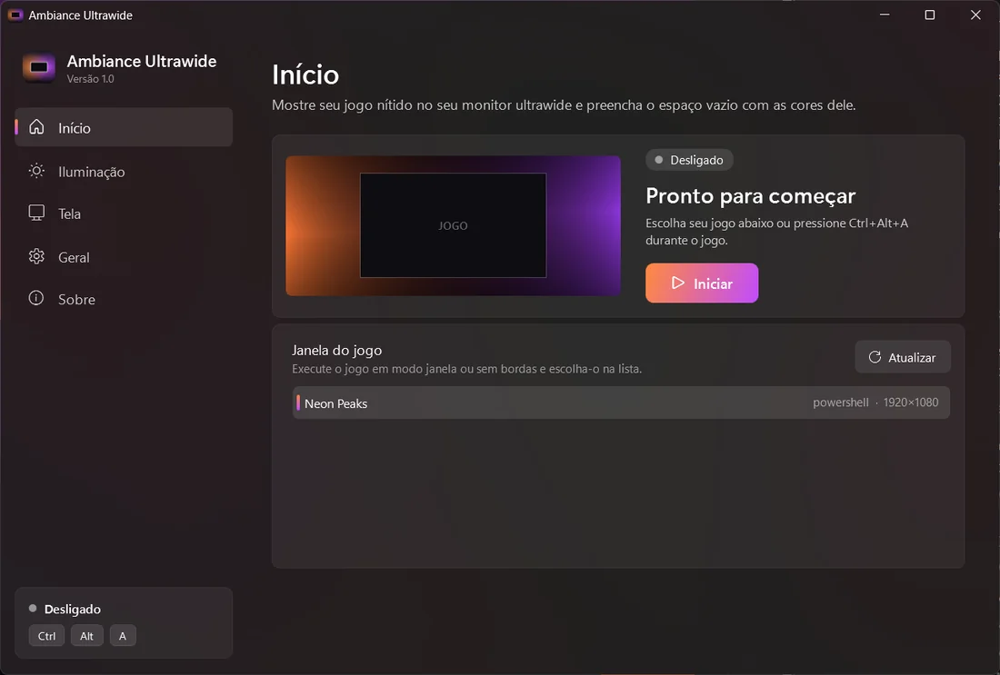
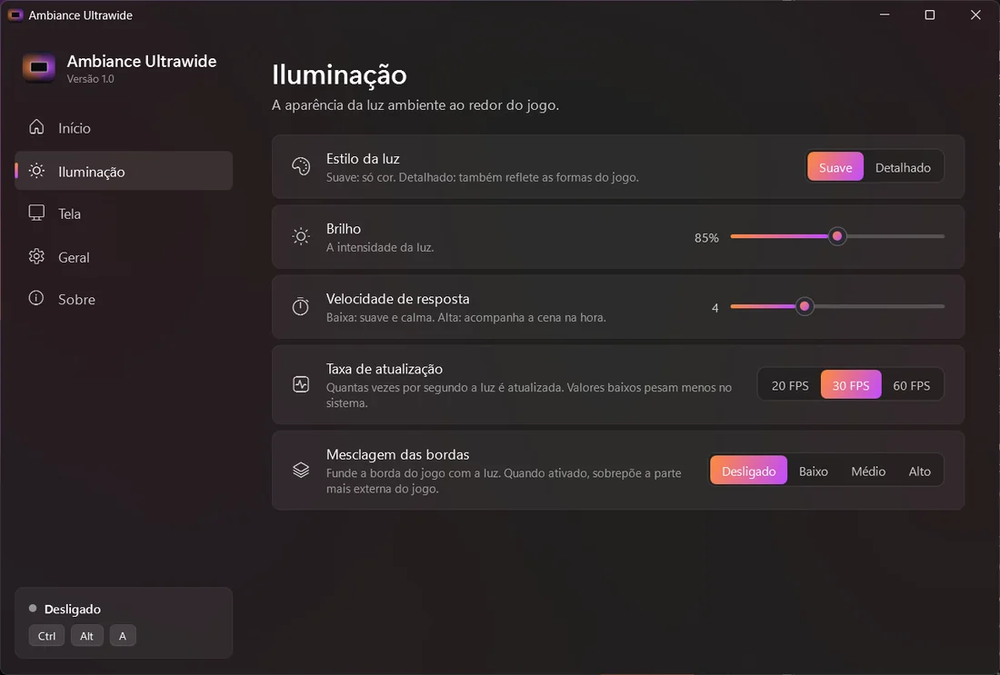

Ambiance Ultrawide
Luz ambiente sincronizada com o seu jogo.
Luz ambiente sincronizada com o seu jogo, para monitores ultrawide. Preenche as barras pretas ao redor do jogo com um brilho suave, como a iluminação ambiente de uma TV. O jogo continua nítido pixel por pixel, sem perder FPS.
Grátis · Código aberto · Windows 10/11 · 12 idiomas

O jogo continua nítido e o espaço vazio brilha com a própria luz
Chega de resolução baixa e borrada
Esquerda: resolução do Windows reduzida. Direita: Ambiance Ultrawide.


Preencha a tela sem perder FPS
O jogo renderiza os mesmos pixels; o Windows os mostra maiores

Luz suave ou detalhada
Um brilho de cor calmo ou um que reflete as formas do jogo

Escolha o jogo e clique em Iniciar
Ou pressione Ctrl+Alt+A durante o jogo

Ajuste a luz do seu jeito
Estilo, brilho, velocidade de resposta e taxa de atualização

Recursos
Captura pela GPU, ~1% de CPU. Nunca mexe na memória do jogo.
- Luz ambiente sincronizada com a cena do jogo
- Imagem nítida, sem o desfoque de baixar a resolução
- Remove bordas, redimensiona e centraliza o jogo
- Preenche a tela sem perder FPS
- Captura pela GPU, ~1% de CPU
- Estilos de luz Suave e Detalhado
- Ajustes de brilho, resposta e taxa de atualização
- Não mexe na memória do jogo nem coleta dados
Sobre
Transforme as barras pretas do seu monitor ultrawide em luz ambiente sincronizada com o seu jogo.
Quando você joga um jogo 16:9 num monitor 21:9 ou 32:9, as laterais ficam pretas. O Ambiance Ultrawide as preenche com um brilho suave que muda em sincronia com a cena do jogo, como a iluminação ambiente das TVs modernas. Explosões, pores do sol e luzes de neon transbordam pelas bordas do jogo, e a tela inteira passa a fazer parte dele.
Dois estilos de luz: Suave (um brilho de cor tranquilo) e Detalhado (acompanha as formas do jogo). Brilho, velocidade de resposta e taxa de atualização são ajustáveis.
Nítido, não borrado: diminuir a resolução do Windows deixa tudo borrado. O Ambiance Ultrawide mostra o jogo numa janela sem bordas, pixel por pixel e centralizado. Se quiser maior, ele pode ampliar o jogo até preencher a tela com a lupa do Windows, sem perder FPS.
Leve para o seu sistema: captura a tela pela placa de vídeo, cerca de 1% de CPU. Nunca mexe na memória nem nos arquivos dos seus jogos; só lê o que aparece na tela. Não coleta dados e não se conecta à internet.
Como usar: execute o jogo em modo janela ou sem bordas, escolha-o no Ambiance Ultrawide e clique em Iniciar. Ou pressione Ctrl+Alt+A durante o jogo. Ctrl+Alt+Z liga e desliga a ampliação.
Grátis e de código aberto. Interface em 12 idiomas.